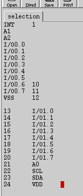
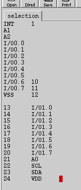
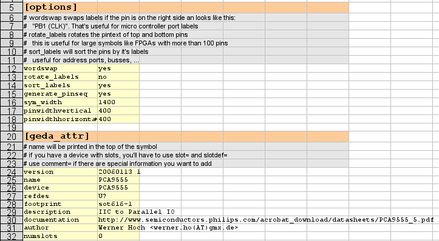
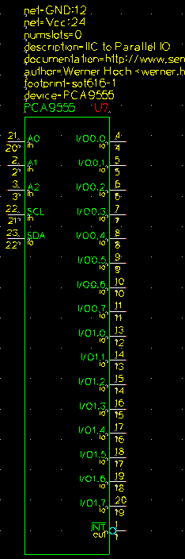

Creating gschem symbols quickly and easily using tragesym and a spreadsheet
programm
Creating symbols for schematic capture can be very time consuming,
error prone, and an all around pain.
Luckily, gschem uses an open, text based file format that is very easy to use
with scripting.
This short tutorial describes how to use the tragesym script, to create
symbols very quickly (probably more quickly than with any commercial
package).
Required steps:
- Step1: Open a tragesym template file
- Step2: Download the part data sheet and find the pin list
- Step3: Copy the pin list into an editor and prepare it
- Step4: Insert all missing data into the spreadsheet
- Step5: Export the spreadsheet into a tab seperated text file
- Step6: execute tragesym and create the symbol
- Step7: check the result with gschem and do some artwork
Step 1: Open a tragesym template file
tragesym comes with two template files. One is ASCII text, the second is a OpenOffice spreadsheet file.
You can obtain them from the gEDA utility package:
utils/examples/tragesym/template.src and utils/examples/tragesym/template.ods
If you prefer a different spreadsheet program, like gnumeric or kspread, just
create your own template out of the textual template file.
The only difference between the textual template and the spreadsheet template is
the syntax of the key value pairs in the [options] and [geda_attr] sections.
The textfile splits them with an equal sign (key=value), the spreadsheet has the
value in the second column (which becomes a tab after beeing exported).
Step 2: Download the part data sheet and find the pin list
For this example, we will create a symbol from the Philips
Semiconductor PCA9555 16-bit IIC IO port. The description of product and
datasheet is available at Philips:
http://www-us.semiconductors.philips.com/cgi-bin/pldb/pip/pca9555.html.
Download the datasheet and open it with a pdf viewer that allows copying text
out of the pdf file, such as xpdf. Flip through the pages until you find the
pinout for
the device:


Step3: Copy the pin list into an editor and prepare it
Inside the datasheet the pin list may only be in the drawing of the pin
configuration.
If there's a nice table, like in the second picture, use this one.
Select the pin list and copy it into a text editor.
This intermediate step is required as your spreadsheet programm may need a
special field seperator, like comma or tab. You may have to remove duplicate
seperators or replace it with tabs.
Note:
The selection behaviour of xpdf is different from the acroread viewer.
The xpdf viewer seems to give you a copy that looks more like the graphical
representation, while the acroread viewer produces an output that is more "file
order" oriented.
If you have to create a lot of symbols, try both and compare the results.
 


The pictures above illustrate the steps:
- insert the selection from your pdf viewer into a text editor
- modify the pinlist to make your spreadsheet programm happy
- cut out pinlist 24 to 13 with a rectangular selection
- insert the rectangular selection below the pins 1 to 12
- sort the lines (xemacs can do that ;-))
- remove or repair the lines with the numbers 2,3,... They are not
in the same line. You can easily recreate the pin numbers later
- replace the spaces with tabs (not really need when using
OpenOffice)
- copy the modified data into the spreadsheet template somewhere beside
Step4: Insert all missing data into the spreadsheet
Now, move the labels into the label column and the pin numbers into the pin
number column.
You can use the autofill feature of your spreadsheet programm to create the pin
numbers, too.

Set the type, style and position column to the most common value. You can use
the autofill feature again.
Now you want to change some fo the values. Take a look at the pin description
table in the datasheet:

Regarding to that table we change the following things (see result below):
- Pin 1 is an output, we like to have a negation bubble and a negation
overbar
- A1 to A3 are inputs, we change the type and move them to the left
side
- set the SCL type to inpult and move SCL and SDA to the left side, too
- change the type of the power pins VSS and VDD and add net names. We
use the more usual GND and Vcc.
Note: If one of your pin labels has a backslash "\" inside, you have to
replace it with it's escape sequence "\\".

Before going on set the attributes and the options to appropriate values.

Step5: Export the spreadsheet into a tab seperated text file
You can either use the export function of your spreadsheet programm to create a
tab seperated textfile or just select the table and copy the content into your
text editor and save the file.
Step6: execute tragesym and create the symbol
Just use a shell and execute tragesym:
werner@werner-amd64:~/Desktop/tragesym_tutorial> tragesym pca555.src pca555.sch
If tragesym says that there's an error, just make some changes in the
spreadsheet and export the file again, or just edit the exported file.
Step7: check the result with gschem and do some artwork
Now open the generated symbol with gschem and check the result
werner@werner-amd64:~/Desktop/tragesym_tutorial> gschem pca555.sch >
Enabling the hidden text ("en", Edit->Show/Hide Inv Text), you can see the
whole generated symbol.
It's not really necessary to change anything, but it might improve the look of
the symbol if you rearange the pins a little bit.


Now we have a complete symbol. You can copy the symbol to your local symbol
library e.g. /usr/local/share/gEDA/sym/local/ and use it.
Conclusion
This was a simple example with a small pincount, but this method really
pays off when you have high pin counts (ie, bga-272, tfqp-100, etc).
Credits
Many thanks to <Russ.Dill@asu.edu>,
who wrote the first version of this tutorial.
Questions/Comments?
If you have any comments or questions please send me a mail <werner.ho@gmx.de>. You can use one of
the gEDA mailing lists too.